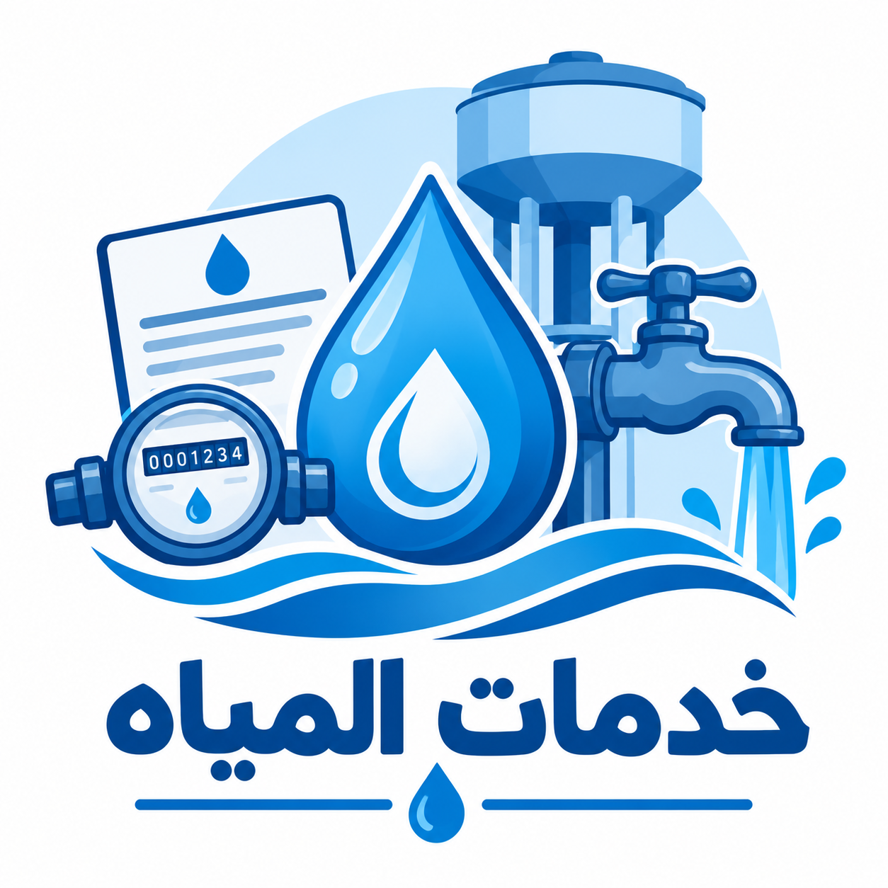

خدمات المياه
تعرف على خدمات المياه والفواتير وقراءة العدادات والشكاوى وخدمات الصرف الصحي.

ما هي خدمات المياه؟
تشمل خدمات المياه توصيل المياه للمنازل والفواتير والصيانة وتقديم الشكاوى.
كما تشمل الخدمات المرتبطة بالصرف الصحي وخدمة العملاء ومتابعة استهلاك المياه.
الوصول إلى خدمات المياه
يمكن التعرف على خدمات شركات مياه الشرب والصرف الصحي من خلال الشركة القابضة لمياه الشرب والصرف الصحي.
الشركة القابضة لمياه الشرب والصرف الصحي- الاستعلام عن الفاتورة
- دفع الفواتير
- تسجيل قراءة العداد
- تقديم الشكاوى
- حساب الاستهلاك
- خدمة العملاء
- معلومات عن ترشيد استهلاك المياه
كيفية استخدام خدمات المياه
- الدخول إلى الموقع أو الخدمة المناسبة.
- اختيار الخدمة المطلوبة.
- إدخال البيانات المطلوبة.
- اتباع خطوات تقديم الطلب.
- متابعة الطلب أو الشكوى عند توفر ذلك.
فوائد خدمات المياه الرقمية
- سهولة الاستعلام عن الفواتير.
- إمكانية دفع الفواتير إلكترونيًا.
- تسجيل قراءة العداد.
- تقديم الشكاوى إلكترونيًا.
- الوصول إلى معلومات عن الاستهلاك وترشيد المياه.